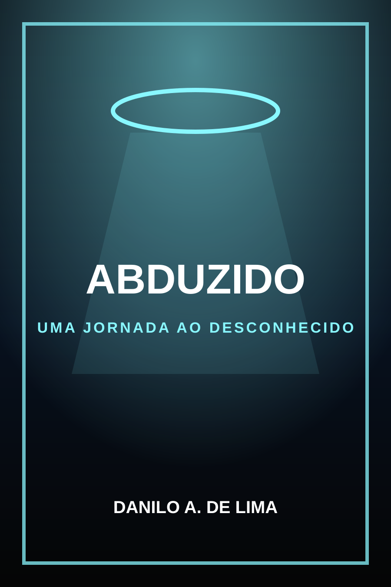

Mistério
Perguntas sem resposta fácil e tensão crescente.
FICÇÃO / MISTÉRIO
Uma obra de ficção, mistério e tensão para leitores que gostam de segredos, fenômenos inexplicáveis e atmosferas sombrias.

ATMOSFERA
Abduzido posiciona a marca autoral também no campo da ficção, abrindo espaço para séries, continuações e comunidade de leitores.
EXPERIÊNCIA DE LEITURA
Perguntas sem resposta fácil e tensão crescente.
Um clima de dúvida, medo e descoberta.
Base para continuações e expansão do universo narrativo.